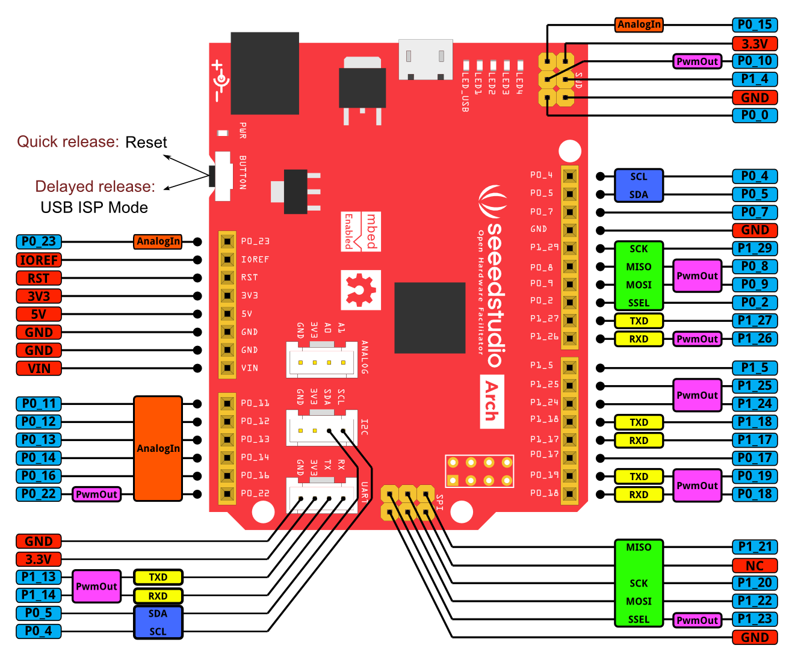
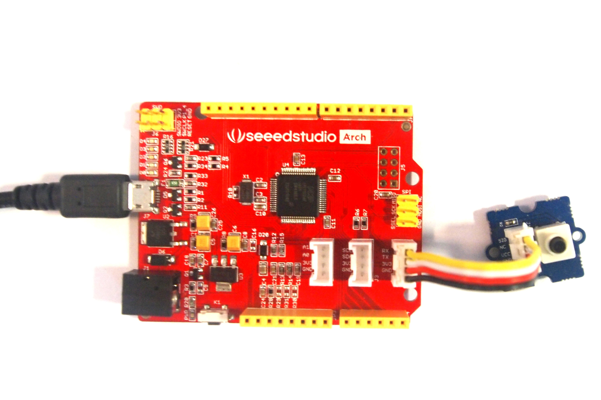
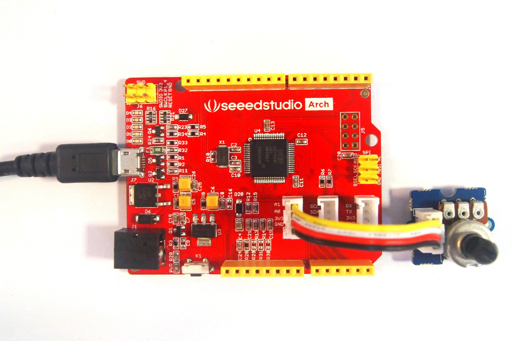
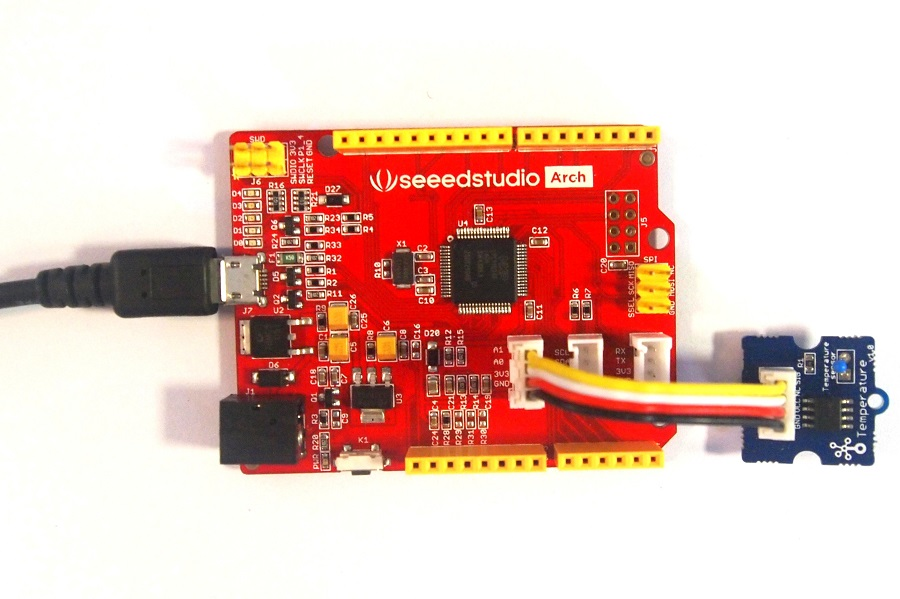
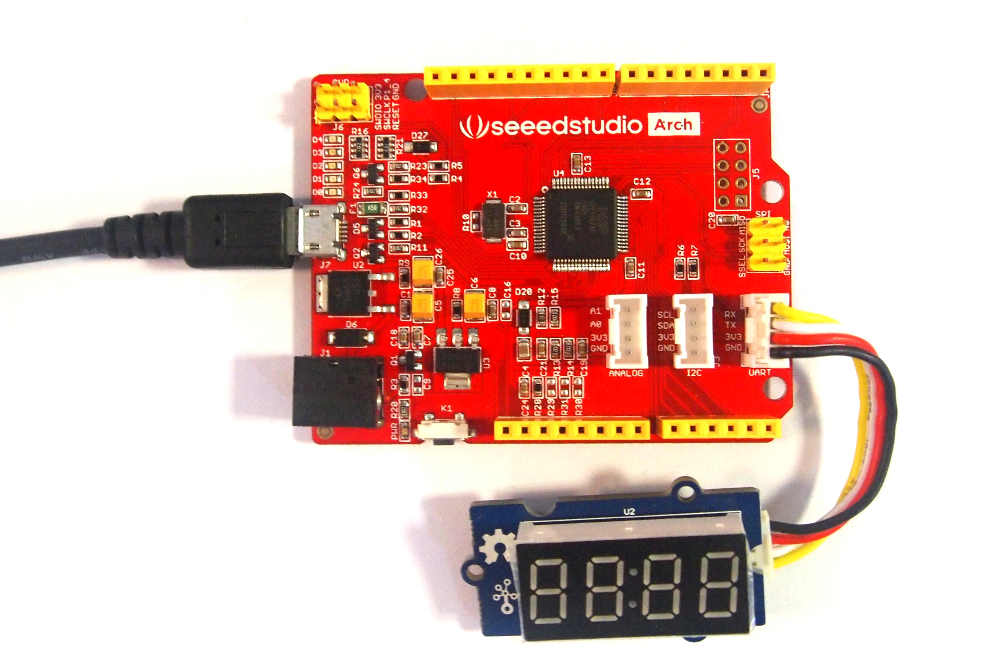

Preface
"Anyone can cook." - Gusteau's (a character in Ratatouille)
This cookbook is a starting point to work with Seeedstudio Arch platform. It introduces the platform with step by step examples by using Seeedstudio Grove modules. The cookbook is written with beginners in mind and assumes no prior experience in mbed API. This book expects a basic knowledge of C programming language. mbed API and programs are written C++ language. Although not essential to understand the programs, it is better you understand how to create an object for a class and how to use member functions.
If you are beginner, who is learning Embedded Systems and programming in C/C++ - import andexecute the examples programs one by one by following the procedure listed in each recipe. You can skip all other fine details presented in the beginning.
Happy Programming :)
Arch platform
Seeedstudio Arch is a mbed enabled platform based on NXP's LPC11U24 microcontroller. This platforms comes with header pins whose footprint are compatible with Arduino shields. The two on-board Grove connectors can be interfaced with numerous Grove based sensors, actuators and display modules.
Arch platform can be easily programmed over USB using the LPC11U24's inbuilt ISP driver. Unlike mbed LPC11U24, Arch platform does not come with mbed interface chip. Hence, an additional Arch board has to be used to debug the target using CMSIS-DAP.
Features
- Shields compatible header pins
- Two Grove connectors
- A large number of grove modules
- Drag-n-drop programming
- NXP LPC11U24 MCU
- Low power ARM Cortex-M0 Core
- 48MHz, 32KB Flash, 8KB RAM, 4KB EEPROM
- USB Device, 2xSPI, UART, I2C
Hardware

Digital In/Out
All pins with light blue coloured lable can be used as DigitalOut/DigitalIn/DigitalInOut interface.
PwmOut
Pins labelled as PwmOut (i.e magenta colourd lable) are possible outputs that can be routed from timers to generate PWM.
UART
The TXD or RXD labelled pins (i.e yellow coloured label) are possible routing pins for one UART port. At a time, one TXD and one RXD pin can be configured for the UART.
Recipe 1: Blinking an LED
A tradition of learn programming is write our first program to print a "hello, world" on our display. In Embedded Systems, we use a blinking LED to show our first running embedded system program to the world.
Ingredients
- Seeedstudio Arch board
- Micro-USB cable
- Access to internet and online mbed compiler.
Procedure
- Import the following Arch_GPIO_Ex1 program into online mbed compiler.
- Select Seeedstudio Arch as target platform (navigate to top-left corner of online compiler).
- Click Compile and Download button.
- You browser will download Arch_GPIO_Ex1_LPC11U24.bin file.
- Connect Arch board to PC using a micro-USB cable.
- Press the reset button longer(at-least 2 seconds) and release.
- You must see a USB drive being detected by you OS.
- Copy the Arch_GPIO_Ex1_LPC11U24.bin to that USB drive.
- Press and release the reset button very quickly.
- You have flashed your first program onto Arch board.
Arch_GPIO_Ex1 - Import to mbed online compiler
#include "mbed.h"
/* Configure a GPIO pin as output for controlling a LED. 'led' is user assigned name and
'LED1' is a internal name given to a port pin P1_8 in this Arch platform. */
DigitalOut led(LED1);
int main()
{
while(1) {
led = 1; // Switch ON the LED.
wait(0.5); // Wait for 0.5 Seconds.
led = 0; // Switch OFF the LED.
wait(0.5); // Wait for 0.5 Seconds.
}
}
The above program uses mbed interface DigitalOut and mbed built-in function wait(). LED1 is an pseudonym given to port pin P1_8. LED1 is labelled D1 in the Arch board. The state of LED1 is changed writing either 0 or 1 to 'led'. The mbed wait() function produces a delay in seconds. The state of the 'led' is continuous toggled every 0.5 seconds inside the endless while() loop.
The features and functions present in DigitalOut are documented in DigitalOut page in handbook. Similarly the wait() function is documented in wait page in handbook
Variation
Let us rewrite the above program using alternate APIs provided DigitalOut and wait.
Arch_GPIO_Ex2 - Import to mbed online compiler
#include "mbed.h"
/* Configure a GPIO pin as output for controlling a LED. 'led' is an user assigned name and
'LED1' is an internal name given to a port pin P1_8 in this Arch platform. */
DigitalOut led(LED1);
int main()
{
while(1) {
led.write(1); // Here, DigitalOut -> write() function is used to set the ouput high.
wait_ms(500); // Wait for 0.5 Seconds. The time is specified in milli-seconds using wait_ms() function.
led.write(0); // Switch OFF the LED.
wait_us(500000); // Wait for 0.5 Seconds. The time is specified in micro-seconds using wait_us() function.
}
}
Instead of led = in the Ex1 program, we have used led.write() function which essential does the same operation. Here, wait() is replaced by wait_us(). The delay time is specified in micro seconds instead of seconds in this function.
Control multi LEDs
Ingredients
- Same as Recipe 1.
Procedure
- Build and upload the program to Arch platform. (follow procedure listed in Recipe 1)
Arch_GPIO_Ex4 - Import to mbed online compiler
#include "mbed.h"
BusOut onboardLEDs(P1_8,P1_9,P1_10,P1_11); /*P1_8 - P1_11 are LED1 - LED4*/
int main()
{
int i;
while(1) {
for(i=0; i<16; i++) {
onboardLEDs.write(i); /* LED1 is LSB and LED4 is MSB*/
wait(0.5);
}
}
}
The following program uses one variable to modify a set of 4 LEDs with BusOut interface. The LED1 to LED4 counts up 4-bit binary value one by one with half-a-second delay. BusOut interface comes handy while sending data to devices with parallel ports like LCDs.
Playing with Digital Output
Ingredients
In addition to things listed in Recipe 1 we require
- Grove - Button

Procedure
- connect Grove - Button to on-board grove connector marked UART.
- Import the following Arch_GPIO_Ex3 program into online mbed compiler.
- Build and upload the program to Arch platform. (follow procedure listed in Recipe 1)
This program keeps the LED1 on as long as the button is pressed.
Arch_GPIO_Ex3 - Import to mbed online compiler
#include "mbed.h"
DigitalOut led(LED1); // Configure LED1 pin as output
DigitalIn button(P1_14); // Configure P1_14 pin as input
int main()
{
while(1) {
led.write(button.read()); /* read the state of input port pin P1_14 and write it to output port pin LED1*/
}
}
We use DigitalIn interface to read the status of a tactile switch connected to port pin P1_14. The button.read() function returns a value 1 if button is pressed and 0 if released. This value is written to LED1 port pin using led.write().
More information on this new module is available at DigitalIn handbook page.
Analog world
Ingredients
In addition to things listed in Recipe 1 we require
- Grove - Potentiometer

Procedure
- Connect middle SIG pin of Grove - Potentiometer to P0_11, other two pins to GND and 3.3V
- Build and upload the program to Arch platform. (follow procedure listed in Recipe 1)
The rate of blinking of the LED is controlled by the analog value read from the potentiometer.
Arch_Analog_POT - Import to mbed online compiler
#include "mbed.h"
AnalogIn pot(P0_11); /* Potentiometer middle pin connected to P0_11, other two ends connected to GND and 3.3V */
DigitalOut led(LED1); /* LED blinks with a delay based on the analog input read */
int main()
{
float ain; /* Variable to store the analog input*/
while(1) {
ain = pot.read(); /* Read analog value (output will be any value between 0 and 1 */
led = 1; /* Switch ON LED */
wait(ain); /* Wait for 'ain' Seconds (maximum delay is 1 seconds)*/
led = 0; /* Switch Off LED */
wait(ain); /* Wait for 'ain' Seconds (maximum delay is 1 seconds)*/
}
}
Temperature Sensing
Ingredients
In addition to things listed in Recipe 1 we require
- Grove - Temperature Sensor

Procedure
- Connect SIG pin of Grove - Temperature Sensor to P0_11, other two pins to GND and 3.3V
- Build and upload the program to Arch platform. (follow procedure listed in Recipe 1)
The room temperature is displayed as LED blinks. LED4 blinks corresponding to tens place of temperature value(in deg C) and LED1 blinks according to units place.
Arch_Analog_Thermistor_Blinker - Import to mbed online compiler
#include "mbed.h"
AnalogIn thermistor(P0_11); /* Thermistor output connected to P0_11 */
DigitalOut tensplaceLED(LED4); /* This led blinks as per tens place of temperature value(in deg C) */
DigitalOut unitsplaceLED(LED1); /* This led blinks as per units place of temperature value(in deg C) */
int main()
{
unsigned int a, beta = 3975, units, tens;
float temperature, resistance;
while(1) {
a = thermistor.read_u16(); /* Read analog value */
/* Calculate the resistance of the thermistor from analog votage read. */
resistance= (float) 10000.0 * ((65536.0 / a) - 1.0);
/* Convert the resistance to temperature using Steinhart's Hart equation */
temperature=(1/((log(resistance/5000.0)/beta) + (1.0/298.15)))-273.15;
units = (int) temperature % 10;
tens = (int) temperature / 10;
for(int i=0; i< tens; i++)
{
tensplaceLED = 1;
wait(.200);
tensplaceLED = 0;
wait(.200);
}
for(int i=0; i< units; i++)
{
unitsplaceLED = 1;
wait(.200);
unitsplaceLED = 0;
wait(.200);
}
wait(0.5);
}
}
Display more information
Ingredients
In addition to things listed in Recipe 1 we require
- Grove - 4 Digit Display

Procedure
- Connect Grove - Digit Display to UART Grove connector
- Build and upload the program to Arch platform. (follow procedure listed in Recipe 1)
Arch_Analog_Thermistor_Blinker - Import to mbed online compiler
#include "mbed.h"
AnalogIn thermistor(P0_11); /* Thermistor output connected to P0_11 */
DigitalOut tensplaceLED(LED4); /* This led blinks as per tens place of temperature value(in deg C) */
DigitalOut unitsplaceLED(LED1); /* This led blinks as per units place of temperature value(in deg C) */
int main()
{
unsigned int a, beta = 3975, units, tens;
float temperature, resistance;
while(1) {
a = thermistor.read_u16(); /* Read analog value */
/* Calculate the resistance of the thermistor from analog votage read. */
resistance= (float) 10000.0 * ((65536.0 / a) - 1.0);
/* Convert the resistance to temperature using Steinhart's Hart equation */
temperature=(1/((log(resistance/5000.0)/beta) + (1.0/298.15)))-273.15;
units = (int) temperature % 10;
tens = (int) temperature / 10;
for(int i=0; i< tens; i++)
{
tensplaceLED = 1;
wait(.200);
tensplaceLED = 0;
wait(.200);
}
for(int i=0; i< units; i++)
{
unitsplaceLED = 1;
wait(.200);
unitsplaceLED = 0;
wait(.200);
}
wait(0.5);
}
}
Recipe 7: Working with RTC
Ingredients
In addition to things listed in Recipe 1, we require
- Grove - Serial LCD
- Grove - RTC
Procedure
- Connect Grove - Serial LCD to on-board grove connector marked UART.
- Connect Grove - RTC to on board grove connector markded I2C.
- Build and upload the program to Arch platform. follow procedure listed in Recipe 1.
The following program demonstrates a clock.
Arch_GroveRTC_Ex1 - Import to mbed online compiler
#include "mbed.h"
#include "SerialLCD.h"
#include "ds1307.h"
SerialLCD lcd(P1_13, P1_14); // Grove Serial LCD is connected to UART Tx and Rx pins
DS1307 rtc(P0_5, P0_4); // Grove RTC is connected to I2C SDA(P0_5) and SCL(P0_4)
int main() {
const char *week[] = {"Sun", "Mon", "Tue", "Wed", "Thu", "Fri", "Sat"};
int sec, min, hour, day, date, month, year;
char strBuffer[16];
lcd.begin();
lcd.print("Clock");
rtc.start_clock();
rtc.gettime(&sec, &min, &hour, &day, &date, &month, &year);
if (0 == year) {
rtc.settime(0, 0, 0, 4, 1, 1, 2014 % 100); // Jan 1st, 2014, Wed, 00:00:00
}
while(1) {
rtc.gettime(&sec, &min, &hour, &day, &date, &month, &year);
snprintf(strBuffer, sizeof(strBuffer), "%d-%d-%d %s", 2000 + year, month, date, week[day]);
lcd.setCursor(0, 0);
lcd.print(strBuffer);
snprintf(strBuffer, sizeof(strBuffer), "%d:%d:%d", hour, min, sec);
lcd.setCursor(0, 1);
lcd.print(strBuffer);
wait(0.5);
}
}
Recipe 8: Working with USB Keyboard
Ingredients
In addition to things listed in Recipe 1, we require
- Grove - Button
Procedure
- Connect Grove - Button to on-board grove connector marked UART.
- Build and upload the program to Arch platform. follow procedure listed in Recipe 1.
The following program demonstrates a USB keyboard with one button. Press the button to mute your computer and press CapsLock, NumLock or ScrollLock of your keyboard to turn on/off Arch's LEDs.
Arch_USB_Keyboard_Ex1 - Import to mbed online compiler
#include "mbed.h"
#include "USBKeyboard.h"
//LED1: NUM_LOCK, LED2: CAPS_LOCK, LED3: SCROLL_LOCK
BusOut leds(LED1, LED2, LED3);
DigitalOut button(P1_14); // Configure P1_14 pin as input
USBKeyboard keyboard;
int main() {
int buttonPressedCount = 0;
while (!keyboard.configured()) { // wait until keyboard is configured
}
while (1) {
leds = keyboard.lockStatus();
if (button.read()) {
buttonPressedCount++;
if (2 == buttonPressedCount) { // when button is pressed about 0.02s
keyboard.mediaControl(KEY_MUTE); // send mute key
}
} else {
buttonPressedCount = 0;
}
wait(0.01);
}
}
The following program implements an automatic input keyboard triggered by CapsLock key (for Windows). When the CapsLock key is pressed, a website is opened by IE.
Arch_USB_Keyboard_Ex2 - Import to mbed online compiler
#include "mbed.h"
#include "USBKeyboard.h"
//LED1: NUM_LOCK, LED2: CAPS_LOCK, LED3: SCROLL_LOCK
BusOut leds(LED1, LED2, LED3);
USBKeyboard keyboard;
int main(void) {
uint8_t caps; // status of CapsLock
while (!keyboard.configured()) { // wait until keyboard is configured
}
while (1) {
leds = keyboard.lockStatus();
caps = keyboard.lockStatus() & 0x2;
// wait until CapsLock is pressed
while ((keyboard.lockStatus() & 0x2) == caps) {
leds = keyboard.lockStatus();
}
if (!caps) {
keyboard.keyCode(KEY_CAPS_LOCK); // lowercase input
}
// Automatic input
keyboard.keyCode('r', 0x08); // win + r
wait(0.1);
keyboard.puts("iexplore http://seeedstudio.com\n\n");
}
}